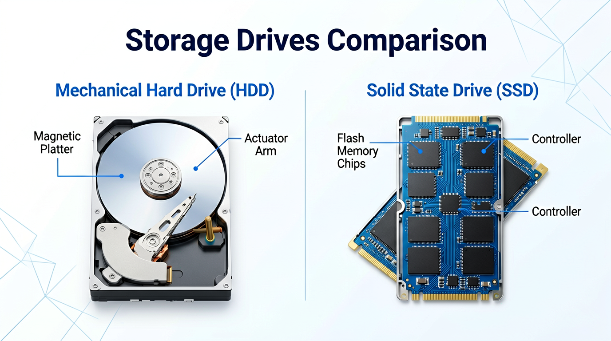

有个常见的场景——公司财务电脑淘汰，直接卖给回收商。结果过段时间竞标，对方报的价刚好低一点点。
一查，对方手里有全套招标底价。
底价哪来的？就是那台旧电脑。回收商用恢复软件把格式化的硬盘翻了底朝天，招标文件、报价表、客户名单，全扒出来了。
这事不是技术多高深。所有数据恢复软件都能干。你点两下「格式化」，只是把目录删了，数据本身还躺在硬盘深处，专业工具恢复出来跟逛自家后院一样简单。
今天聊聊数据销毁。不是教你点几下鼠标——是告诉你为什么格式化不管用、不同设备该怎么处理、还有为什么很多人做完销毁就栽在最后一步。
机械硬盘和固态硬盘，处理方式完全不一样
大部分人以为数据销毁就是一回事。
实际上，你手里的是机械硬盘还是固态硬盘，销毁逻辑完全不同。

机械硬盘像一本纸质日记。你写了100页，想销毁，可以用墨水把其中几页涂黑。涂一遍不够？多涂几遍，原来的字就看不出来了——这就是覆写。HDD的数据记录在磁盘的磁性涂层上，专业上有个DoD 5220.22-M标准，说白了就是往同一位置反复覆写3遍以上，旧的磁场痕迹基本就没了。覆写完的硬盘还能当二手配件卖，不糟蹋钱。
固态硬盘不是这个逻辑。
SSD像一块带智能管理系统的电子黑板。内部有个「磨损均衡」控制器——它怕你老往同一个位置写把芯片写坏了，会自动把新数据挪到不同的地方。你发一条指令说「把这页内容覆写掉」，控制器可能根本不理你，反而把数据转移到另一个隐蔽的角落。
所以对SSD，常规覆写基本没用。主流做法是两种：用主控芯片自带的「安全擦除」指令，或者直接物理粉碎。
数据敏感度决定处理深度
聊到具体操作时，很多人会问：那我到底要处理到什么程度？
这个没有标准答案，取决于你机器里的数据值多少钱。
第一档：个人旧电脑，没有敏感数据。
比如你淘汰了自己打游戏的电脑，里面除了游戏存档就是电影。这种情况用免费工具（DBAN、Eraser）做一次多遍覆写就够了。硬盘覆写后还能挂闲鱼卖二手，数据没了，残值还在。
第二档：公司日常办公电脑，有客户资料、合同、报价单。
这是最危险的一档。很多小公司觉得电脑进公司就是「办公用」，淘汰时格式化就扔了。我这些年见过太多这种情况出事的——最轻的损失几万块，重的直接丢项目。
这类设备建议走物理粉碎加第三方销毁报告。找有资质的电子废弃物处理公司，机器送过去，全程录像，出具含设备编号和销毁方式的报告。一条硬盘的粉碎成本几十块钱，比出事后的损失小几个数量级。
第三档：涉密设备，财务服务器、招投标专用机。
这个不用商量。物理粉碎加销毁报告加全流程溯源。而且要保留销毁前后的影像资料，方便以后审计追溯。数据安全法和ISO 27001对涉密信息都有明确要求——销毁不是「清掉」就行，是「清掉+证明你清掉了」才算完。
很多人栽在最后一步
前面说得再好，最后一步没做对，等于白干。
遇过这样的情况：公司淘汰了一批旧服务器，请了专业公司做物理粉碎，也有销毁报告，看着挺正规。结果两年后审计，发现其中有几台设备编号对不上。追溯下来是销毁公司漏了一台，那台服务器被转手卖到二手市场了。
专业流程必须有三样东西。
先是销毁后的验证。
不能用「我眼看着它进粉碎机了」代替。得用专用工具扫描已销毁的存储介质，确认没有任何可恢复的数据残留。有些做得规范的公司，还会在粉碎前做一次数据擦除，粉碎后再做一次残留扫描——双重保险。
其次是销毁报告。
包含时间、地点、设备编号、销毁方式、操作人、监毁人。这是审计能查到的基础文件，丢了等于没做。
最后是影像留存。
全程录像，最好有销毁前设备标签和销毁后残骸的比对照片。不是为了好看，是审计万一找上门，你拿得出铁证。
这三样备齐了，才算真正意义的「销毁」。
一点建议
数据销毁这事，说穿了不复杂，但确实是个容易栽跟头的隐蔽工程。很多老板知道服务器要上防火墙、电脑要装杀毒软件，但很少有人会想「淘汰这台机器时，数据去了哪里」。
如果你公司有淘汰下来的电脑、服务器，不确定里面的数据有没有清理干净，可以找我聊聊。免费帮你诊断一下，告诉你是直接覆写保留残值就行，还是得走物理粉碎。